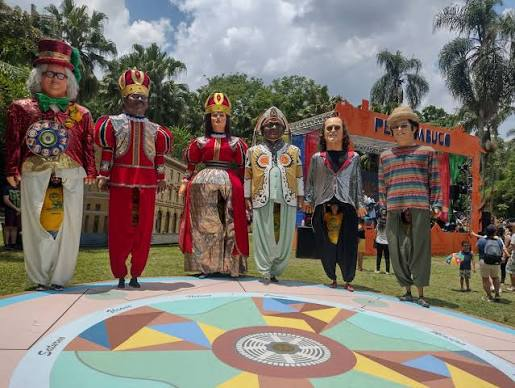
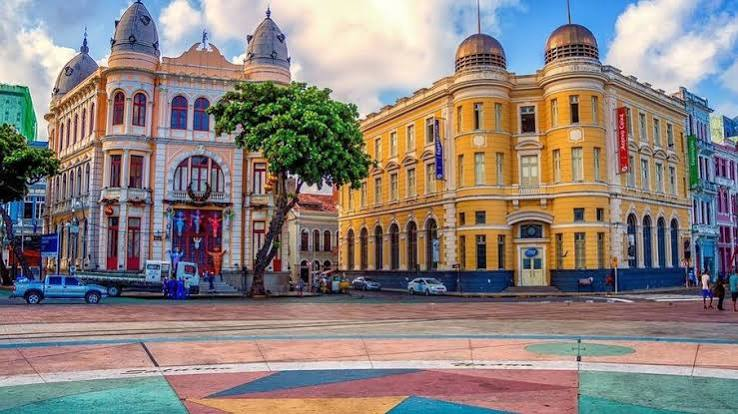

1. Embaixada dos Bonecos Gigantes

Localizada em um casarão histórico, a embaixada abriga os famosos bonecos gigantes que animam o carnaval de Pernambuco. É a oportunidade perfeita para ver de perto representações de personalidades da cultura, música e história mundial.
2. Paço do Frevo

O Paço do Frevo é um espaço dedicado à salvaguarda e celebração do frevo, ritmo considerado Patrimônio Imaterial da Humanidade. O local oferece exposições interativas, documentos históricos e conta a trajetória desse ritmo contagiante.